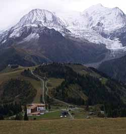

dérochoir des Rognes (2550 m)

Départ : gare de la Chalette (1801 m)
Aller : 4,9 km, +758 et - 38 m, 137 min
Retour : 3,8 km, - 720 m, 75 min
Difficulté : E
Période : mi juillet - septembre
Remarque : au delà de 2550 m, le chemin est éboulé, détruit par les chutes de pierres fréquentes en été : gros danger !
Bibliographie : -
Course décrite page 143.
Photo : du Prarion, début octobre : le col de Voza, le Lachat (sans neige), le dérochoir (où débute la neige) et l'aiguille du Goûter. A droite, l'aiguille de Bionnassay.